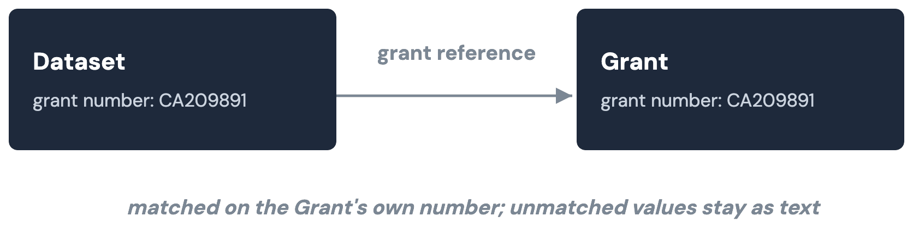
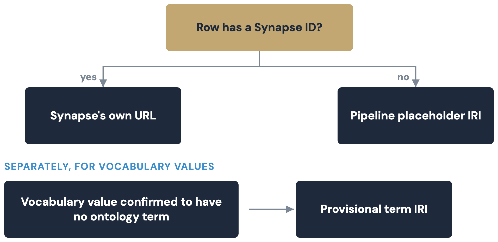

Model and identifiers¶
This page covers the LinkML schemas, class alignment, the "Key"-to-"Ref" join convention, and how every IRI is minted. See Overview for context, and the kg-pipeline README for scripts and flags this page doesn't repeat.
LinkML schemas¶
| Schema | Source | Notes |
|---|---|---|
schema/mc2_model.linkml.yaml |
This repo's mc2.model.csv + modules/mapping.yaml |
Generated by a vendored converter (Stage 0 in Build and validation) |
schema/cckp_portal.linkml.yaml |
Hand-authored | Imports mc2_model.linkml's shared enums; its 5 classes match the live Synapse table shapes |
Class alignment (schema.org / Biolink)¶
cckp_portal.linkml.yaml declares a schema.org and Biolink mapping per
class (see the
class-alignment design).
| Class | schema.org | Biolink |
|---|---|---|
| Dataset | schema:Dataset (exact) |
biolink:Dataset (exact) |
| Publication | schema:ScholarlyArticle (exact) |
biolink:Publication (exact) |
| Tool | schema:SoftwareApplication (exact) |
biolink:InformationContentEntity (close) |
| Grant | schema:MonetaryGrant (exact) |
biolink:AdministrativeEntity (close) |
| EducationalResource | schema:LearningResource (close) |
biolink:InformationContentEntity (close) |
Biolink is materialized as a second rdf:type on every instance and
checked on every build; the schema.org alignment stays a class-level
claim only (real schema: predicates come from the DataCatalog layer).
Foreign keys: "Key" in the model, "Ref" in the graph¶
Every foreign-key attribute in the model is named "<Entity> Key"
(Dataset Key, Grant Key, ...), defined once in
modules/shared/annotationProperty.csv; a Key value is a plain string
naming another record, not an embedded object. Ref edges are a separate
thing: cckp_portal.linkml.yaml marks specific portal-schema columns —
never a model "Key" field — with a cckp_join annotation, and
build_triples.py resolves those into a Ref edge. mc2_model.linkml.yaml
carries no cckp_join at all, so a model "Key" field (like File View's
Biospecimen Key) stays a plain literal unless a separate stage resolves
it, as link_sagebrain.py does by grouping rows on the literal value.
| Portal column | Joins to | Ref edge |
|---|---|---|
grantNumber |
Grant.grantNumber |
cckp:grantNumberRef |
pubMedId |
Publication.pubMedId |
cckp:pubMedIdRef |
dataset/datasets |
Dataset.datasetAlias |
cckp:datasetRef |

Identifiers and namespaces¶
One function mints every instance IRI, so every script that points at an existing row does it the same way.

A row with a real Synapse id gets Synapse's own canonical IRI — the same base governanceDUO and sagebrain-model use, so the graphs join with no translation. A row with no Synapse id gets a placeholder IRI this pipeline owns.
Dataset and Grant use a declared identifier slot (datasetId, grantId);
the other three classes fall back through a per-class field, and finally
to a synthetic id, "synthetic-" + sha1(...)[:16], hashed from whatever
fallback fields are populated:
| Class | Falls back to | Last resort, hashed |
|---|---|---|
| Publication | pubMedId |
publicationTitle + doi |
| Tool | toolName |
description + downloadUrl |
| EducationalResource | internalIdentifier/alias |
title |
A CV value confirmed to have no real ontology term instead gets a
provisional IRI, .../cckp-portal/terms/{field}/{slug}, rather than a
dead-end literal or a guess.
| Namespace | Base IRI | Used for |
|---|---|---|
cckp: |
https://w3id.org/mc2-center/cckp-portal/ |
Every class/predicate this pipeline mints |
| (no prefix) | https://w3id.org/mc2-center/cckp-portal/data/ |
Locally-minted instance IRIs |
| (no prefix) | https://w3id.org/mc2-center/cckp-portal/terms/ |
Provisional placeholder concepts |
| (no prefix) | https://www.synapse.org/Synapse: |
Canonical Synapse-entity IRIs |
mc2: |
https://w3id.org/mc2-center/mc2-model/ |
MC2 model schema terms |
biolink: |
https://w3id.org/biolink/vocab/ |
Dual typing, private-layer stub nodes |
schema: |
https://schema.org/ |
Class alignment, real DataCatalog predicates |
sagecdm: |
https://sage-bionetworks.github.io/SageCommonDataModel/ |
SCDM federation nodes |
sagebrain: |
https://w3id.org/synapse/sagebrain# |
Private-layer links into sagebrain-model |
| (ontology bases) | NCIT/EDAM/ROR/SNOMED/... | Resolved ontology and registry terms |
shape: |
https://w3id.org/mc2-center/cckp-portal/shapes# |
SHACL shape names |
gov: |
https://w3id.org/synapse/governance# |
governanceDUO's own namespace — never asserted here |
See Federation and sagebrain-model for why kg-pipeline
never mints or asserts anything in gov:.
A worked example¶
Real, trimmed output for one Dataset row, syn20826574
(kg-pipeline/data/rdf/Dataset.ttl, from a live build):
@prefix cckp: <https://w3id.org/mc2-center/cckp-portal/> .
@prefix biolink: <https://w3id.org/biolink/vocab/> .
<https://www.synapse.org/Synapse:syn20826574> a biolink:Dataset,
cckp:Dataset ;
cckp:assay "CRISPR" ;
cckp:consortium "CSBC" ;
cckp:datasetAlias "Genetic Interactions of Chromatin-Related Genes" ;
cckp:datasetId "syn20826574" ;
cckp:doi "https://doi.org/10.1038/nmeth.4286" ;
cckp:doiIri <https://doi.org/10.1038/nmeth.4286> ;
cckp:fileFormats "Pending Annotation" ;
cckp:fileFormatsTerm <http://purl.obolibrary.org/obo/NCIT_C53470> ;
cckp:grantNumber "CA209891" ;
cckp:grantNumberRef <https://www.synapse.org/Synapse:syn10140998> ;
cckp:pubMedId "28481362" ;
cckp:pubMedIdIri <https://pubmed.ncbi.nlm.nih.gov/28481362> ;
cckp:pubMedIdRef <https://w3id.org/mc2-center/cckp-portal/data/Publication/28481362> ;
cckp:species "Human" ;
cckp:speciesTerm <http://purl.obolibrary.org/obo/NCIT_C14225> ;
cckp:tumorType "Not Applicable" ;
cckp:tumorTypeTerm <http://purl.obolibrary.org/obo/NCIT_C48660> ;
cckp:version 1 .
The subject is the dataset's own Synapse IRI, not a second identifier.
doi/pubMedId are raw portal values; doiIri/pubMedIdIri are
resolvable IRIs templated from their shape.
tumorTypeTerm/speciesTerm/fileFormatsTerm are the real NCIT concept
each value resolved to. grantNumberRef/pubMedIdRef are the two
resolved joins, one Synapse-canonical and one locally minted.